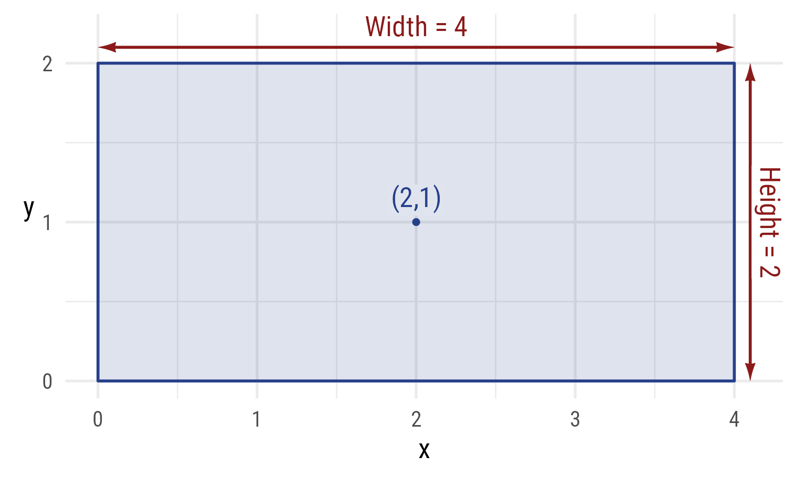
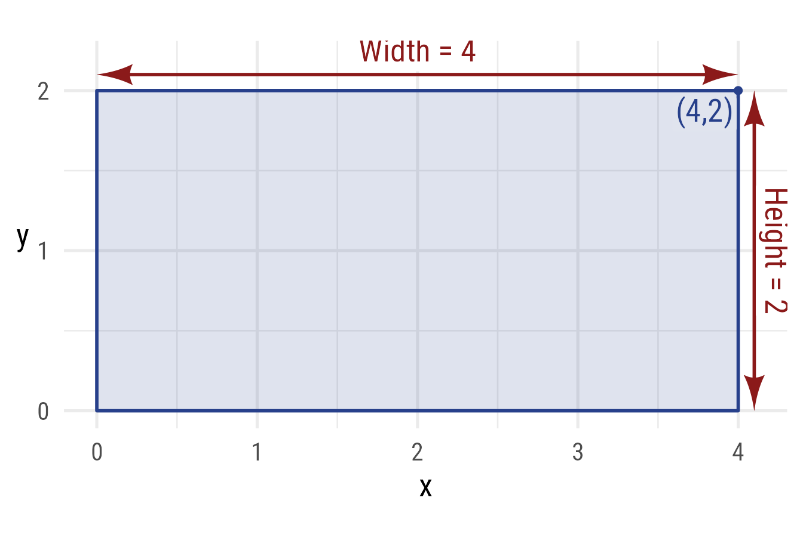
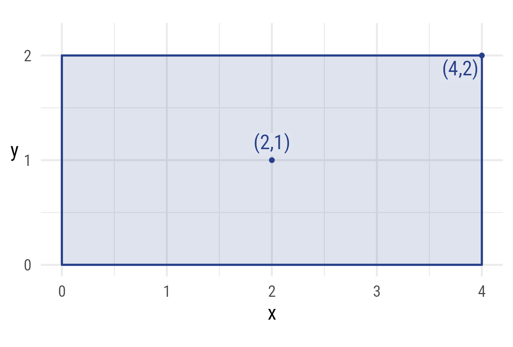
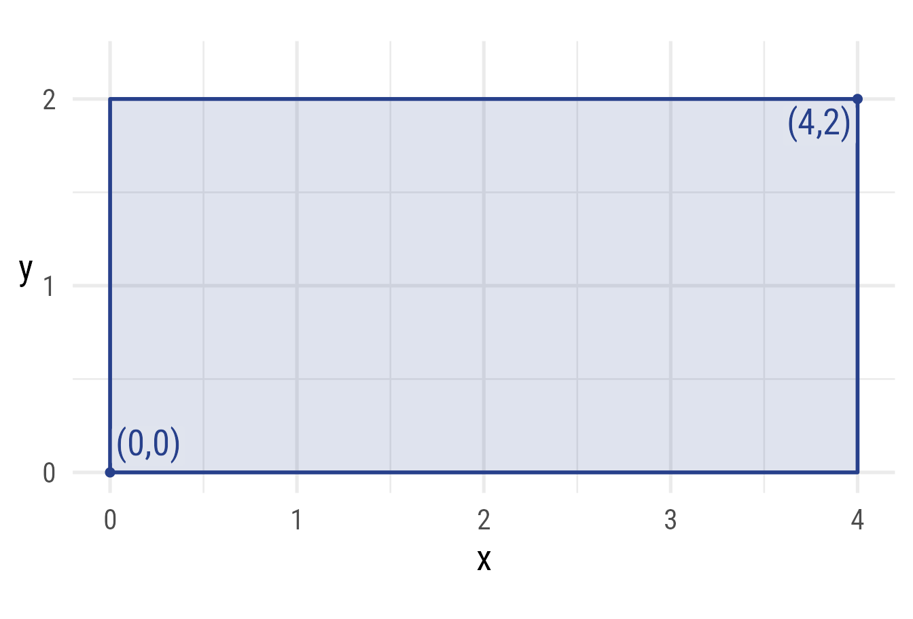
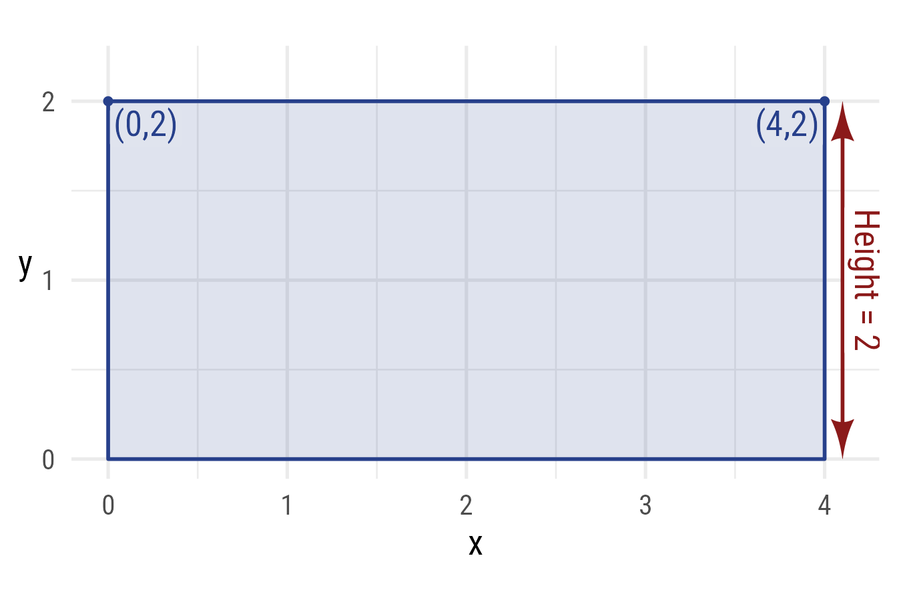
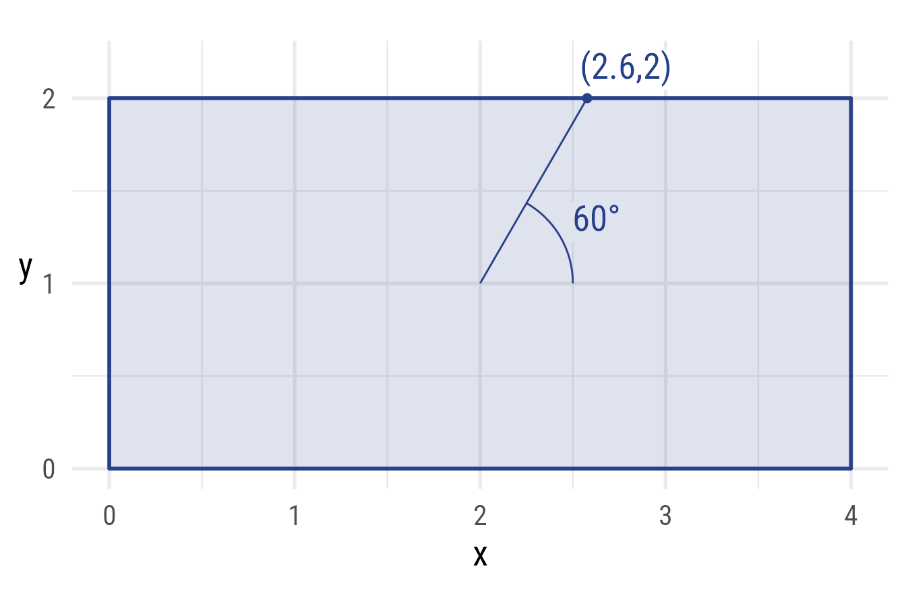
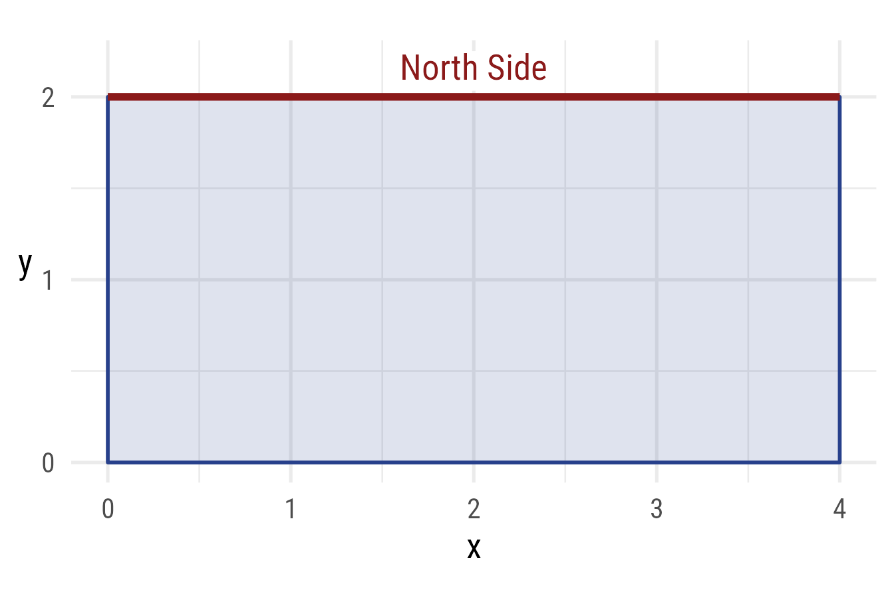
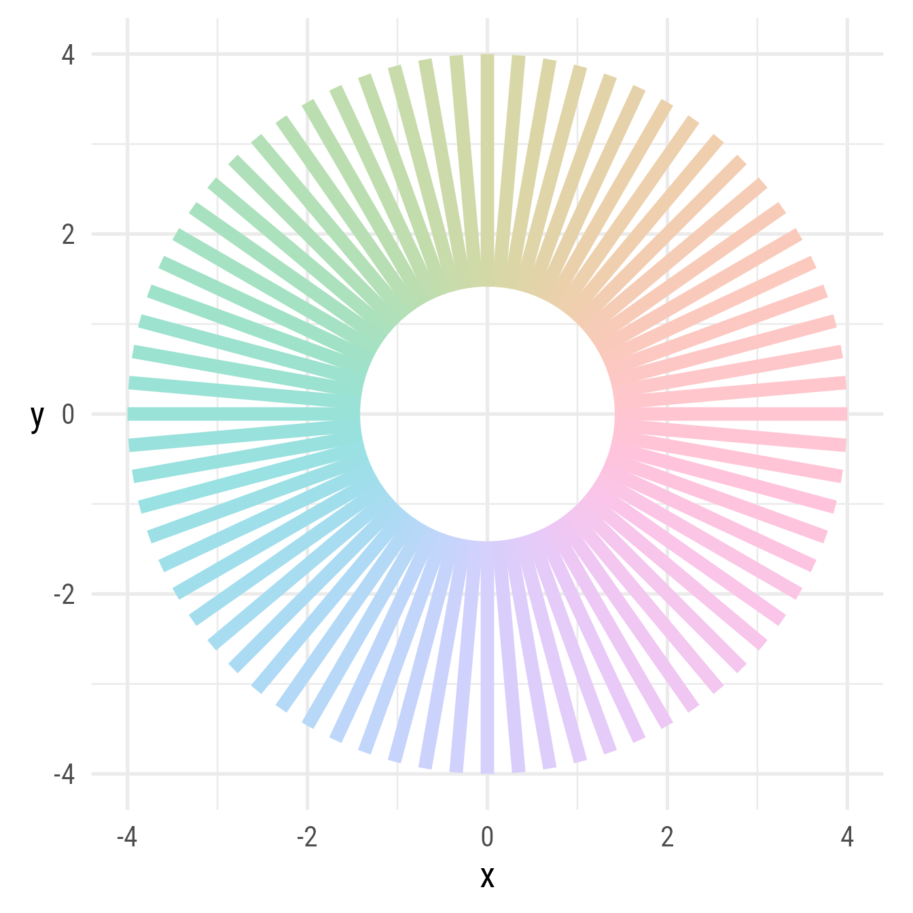

library(ggdiagram)
library(ggplot2)
library(ggtext)
library(ggarrow)
library(arrowheadr)
my_font <- "Roboto Condensed"
my_text_size <- 20
my_point_size <- 3
my_colors <- list(
primary = class_color("royalblue4"),
secondary = class_color("firebrick4"),
tertiary = class_color("orchid4"))
update_geom_defaults(
geom = "richtext",
new = list(family = my_font,
size = .8 * my_text_size / ggplot2::.pt))
update_geom_defaults(
geom = "point",
list(size = my_point_size))
theme_set(
theme_minimal(
base_size = my_text_size,
base_family = my_font) +
theme(
axis.title.y = element_text(angle = 0, vjust = 0.5, face = "italic"),
axis.title.x = element_text(face = "italic")))Specifying a Rectangle
A rectangle has 4 corners (northeast, northwest, southwest, and southeast). It has a center. It has width and height. For the purpose of demonstration, we can specify all these features, though in practice not all of them are necessary.
If you give the rectangle function enough information to deduce where its four corners will be, all other features will be calculated. All of the following will give the same rectangle:
Give width, height, and any point
An easy way to specify a rectangle is to specify its width and height and any of its points. All the following rectangles are equivalent.
Center, width, and height
r1 <- ob_rectangle(
width = w,
height = h,
center = cent,
color = my_colors$primary,
fill = my_colors$primary@transparentize(.15),
linewidth = 1
)
r1
#> <ob_rectangle>
#> @ center: <ob_point>
#> @ x: num 2
#> @ y: num 1
#> @ width : num 4
#> @ height: num 2
#> Other props: label, radius, alpha, color, fill, linewidth,
#> linetype, angle, area, bounding_box, perimeter,
#> northeast, northwest, southwest, southeast, east,
#> north, west, south, side, length, style, tibble, geom,
#> normal_at, point_at, aestheticsCode
double_arrowstyle <- ob_style(
arrow_head = arrow_head_deltoid(),
arrow_fins = arrow_head_deltoid(),
color = my_colors$secondar
)
s_east <- r1@side@east@nudge(x = .1)
s_east@style <- double_arrowstyle
s_north <- r1@side@north@nudge(y = .1)
s_north@style <- double_arrowstyle
rc_plot <- ggplot() +
coord_equal(ylim = c(0, 2.2)) +
scale_y_continuous(breaks = -10:10) +
r1
rc_center <- c(
as.geom(r1@center),
as.geom(r1@center@label(
fill = my_colors$primary@lighten(.15),
vjust = -.15)))
rc_width <- as.geom(s_north |> set_props(label = ob_label(
label = paste0("Width = ", r1@width),
p = midpoint(s_north),
color = my_colors$secondary,
vjust = 0,
label.margin = ggplot2::margin(2, 2, 2, 2, "pt")
)))
rc_height <- as.geom(s_east |>
set_props(label = ob_label(
label = paste0("Height = ", r1@height),
p = midpoint(s_east),
vjust = 0,
color = my_colors$secondary,
angle = -90)))
rc_nw <- r1@northwest@label(
plot_point = T,
vjust = 1.1,
hjust = 0,
fill = my_colors$primary@lighten(.15)
)
rc_ne <- r1@northeast@label(
plot_point = T,
vjust = 1.1,
hjust = 1,
fill = my_colors$primary@lighten(.15)
)
rc_sw <- r1@southwest@label(
plot_point = T,
vjust = -.1,
hjust = 0,
fill = my_colors$primary@lighten(.15)
)
rc_se <- r1@southeast@label(
plot_point = T,
vjust = -.1,
hjust = 1,
fill = my_colors$primary@lighten(.15)
)
rc_plot + rc_center + rc_width + rc_height

Northeast corner, width, and height
r1 == ob_rectangle(width = w,
height = h,
northeast = ne)
#> [1] FALSECode
rc_plot + rc_width + rc_height + rc_ne

Northwest corner, width, and height
r1 == ob_rectangle(width = w,
height = h,
northwest = nw)
#> [1] FALSECode
rc_plot + rc_width + rc_height + rc_nw
Southwest corner, width, and height
r1 == ob_rectangle(width = w,
height = h,
southwest = sw)
#> [1] FALSECode
rc_plot + rc_width + rc_height + rc_sw
Southeast corner, width, and height
r1 == ob_rectangle(width = w,
height = h,
southeast = se)
#> [1] FALSECode
rc_plot + rc_width + rc_height + rc_se
Give the center and any of the 4 corners
A rectangle can be specified with the center and any other corner. The following rectangles are equivalent.
Northeast corner and center
r1 == ob_rectangle(center = cent,
northeast = ne)
#> [1] FALSECode
rc_plot + rc_center + rc_ne

Northwest corner and center
r1 == ob_rectangle(center = cent,
northwest = nw)
#> [1] FALSECode
rc_plot + rc_center + rc_nw
Southeast corner and center
r1 == ob_rectangle(center = cent,
southeast = se)
#> [1] FALSECode
rc_plot + rc_center + rc_se
Southeast corner and center
r1 == ob_rectangle(center = cent,
southwest = sw)
#> [1] FALSECode
rc_plot + rc_center + rc_sw
Give opposite corners
A rectangle can be specified with points from opposite corners. These rectangles are equivalent.
Northeast and southwest corners
r1 == ob_rectangle(
northeast = ne,
southwest = sw)
#> [1] FALSECode
rc_plot + rc_sw + rc_ne

Northwest and southeast corners
r1 == ob_rectangle(
northeast = ne,
southwest = sw)
#> [1] FALSECode
rc_plot + rc_se + rc_nw
Give width and two points on either side
A rectangle can be specified with the width and 2 points from the left or right side. These rectangles are equivalent.
r1 == ob_rectangle(width = w,
northwest = nw,
southwest = sw)
#> [1] FALSECode
rc_plot + rc_width + rc_nw + rc_sw
r1 == ob_rectangle(width = w,
northwest = ne,
southwest = se)
#> [1] FALSECode
rc_plot + rc_width + rc_ne + rc_se
Give height and two points on top or bottom
A rectangle can be specified with the height and 2 points from the top or bottom side. These rectangles are equivalent.
Height and top corners
r1 == ob_rectangle(height = h,
northwest = nw,
northeast = ne)
#> [1] FALSECode
rc_plot + rc_height + rc_ne + rc_nw

Height and bottom corners
r1 == ob_rectangle(height = h,
southwest = sw,
southeast = se)
#> [1] FALSECode
rc_plot + rc_sw + rc_se + rc_height
Rectangle points
The corners and side midpoints can be extracted. Here is the north point (i.e., the midpoint of the north side):
r1@north
#> <ob_point>
#> @ x: num 2
#> @ y: num 2
#> Other props: alpha, color, fill, shape, size, stroke, auto_label,
#> bounding_box, length, r, theta, style, tibble, xy,
#> geom, label, aestheticsCode
rc_plot +
purrr::map(
c(
"east",
"north",
"west",
"south",
"northeast",
"northwest",
"southeast",
"southwest",
"center"
),
\(x) {
v <- ifelse(grepl(x = x, "north"),
1.1,
ifelse(grepl(x = x, "south|center"),
-.1,
.5))
h <- ifelse(grepl(x = x, "east"),
1.1,
ifelse(grepl(x = x, "west"), -.1, .5))
c(
as.geom(
prop(r1, x)@label(
label = x,
hjust = h,
vjust = v,
fill = my_colors$primary@lighten(.15)
)
),
as.geom(
prop(r1, x)@label(hjust = 1 - h, vjust = 1 - v),
fill = ifelse(x == "center",
my_colors$primary@lighten(.15),
"white")
),
as.geom(prop(r1, x))
)
}
) +
coord_equal(xlim = c(-.25, 4.25), ylim = c(-.25, 2.25))
Points at any angle
theta <- degree(60)
r1@point_at(theta)
#> <ob_point>
#> @ x: num 2.58
#> @ y: num 2
#> Other props: alpha, color, fill, shape, size, stroke, auto_label,
#> bounding_box, length, r, theta, style, tibble, xy,
#> geom, label, aestheticsCode
r1_theta <- r1@point_at(theta)
rc_plot +
ob_segment(r1@center, r1_theta) +
r1_theta@label(
polar_just = ob_polar(theta, 1.5),
plot_point = T) +
ob_arc(center = r1@center,
radius = .5,
end = theta,
label = ob_label(theta,
fill = my_colors$primary@lighten(.15),
color = my_colors$primary@color))

Rectangle sides
Each side of the rectangle can be extracted. For example, here is the north side segment:
r1@side@north
#> <ob_segment>
#> @ p1: <ob_point>
#> @ x: num 0
#> @ y: num 2
#> @ p2: <ob_point>
#> @ x: num 4
#> @ y: num 2Code
rc_plot +
r1@side@north |>
set_props(color = my_colors$secondary@color, linewidth = 2) +
r1@north@label(label = "North Side",
vjust = -.1,
size = 20,
color = my_colors$secondary)

Rounded corners
The @radius property controls the radius of the rounded corners. It must be of length 1. It can be given in as a ggplot2::unit or as a numeric value. If numeric, it is understood as a proportion of the plot area width. Rounding does not affect the location of corners.
ggplot() +
coord_equal(xlim = c(-4, 4),
ylim = c(-4, 4)) +
ob_rectangle(
ob_point(0, 0),
width = 6,
height = 4,
radius = unit(5, "mm")
)
Rotation angle
It is possible to rotate a rectangle.
ggplot() +
coord_equal(xlim = c(-4, 4),
ylim = c(-4, 4)) +
ob_rectangle(
center = ob_point(0, 0),
width = 6,
height = 2,
angle = 30
)Many angles can be specified at once:
# Angles
th <- degree(seq(0, 355, 5))
# Radius of middle space
r_middle <- sqrt(2)
# Rectangle width
w <- 4 - r_middle
ggplot() +
coord_equal(xlim = c(-4, 4),
ylim = c(-4, 4)) +
ob_rectangle(
center = ob_polar(theta = th,
r = w / 2 + r_middle),
width = w,
height = .15,
angle = th,
color = NA,
fill = hcl(th@degree)
)
